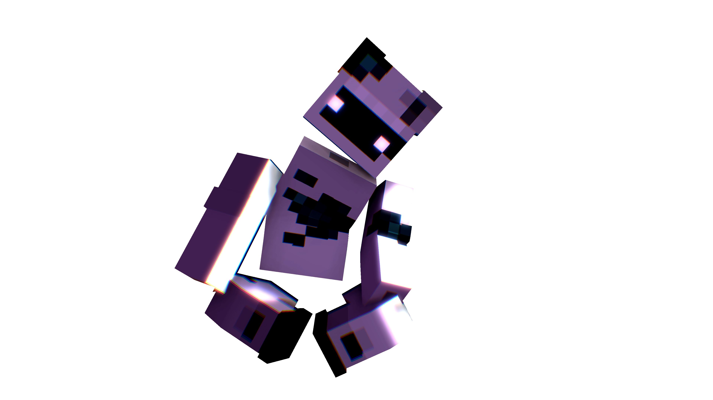

🔊
SquareFox
← Главная
Персонажи
О проекте
FAQ
🎰 Рулетка
Испытай судьбу межпространства
Кто ты из
персонажей SF?
Колесо судьбы (Казино SF)

SF
🎰 Крутить
Администрация Проекта — Мошенники
✕
Ты — это...
🎰 Крутить ещё раз